철도신호기사 (2018-09-15 기출문제)
1과목: 전자공학
1. 이상적인 연산증폭기의 특성으로 틀린 것은?
- 주파수 대역폭이 무한대이다.
- 입력 바이어스 전류는 0 이다.
- 출력저항은 무한대이다.
- 개방 전압 이득은 무한대이다.
(정답률: 64%)

2. JK플립플롭의 특성표를 참고한 특성 방정식으로 옳게 표현한것은?
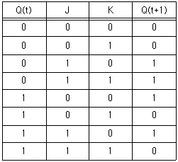
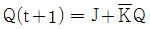
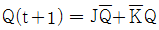
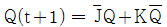
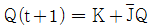
(정답률: 67%)
3. 정상동작 상태로 바이어스된 npn 트랜지스터에서 베이스 전위를 기준으로 컬렉터 전위는 어떤 전위인가?
- 양전위
- 음전위
- 동전위
- 영전위
(정답률: 69%)
4. 증폭회로의 전압 증폭도가 30인 경우, 이는 약 몇 dB 인가?
- 20
- 25
- 30
- 35
(정답률: 58%)
5. 다음 중 프로그래머블(programmable) 소자가 아닌 것은?
- PROM
- PAL
- PLA
- CMAR
(정답률: 71%)
6. 그림과 같은 회로의 명칭은?
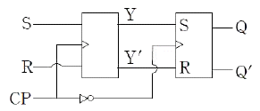
- Master-Slave 플립플롭 회로
- Trigger 회로
- 더블 RS 플립플롭 회로
- JK 플립플롭 회로
(정답률: 58%)
7. 농도 차이에 의한 전자 혹은 정공의 흐름을 나타내는 것은?
- 확산전류
- 드리프트전류
- 차단전류
- 포화전류
(정답률: 65%)
8. RL 직렬회로의 과도응답에서 감쇠율로 옳은 것은?
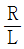
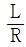
- R
- L
(정답률: 58%)
9. 다음 그림과 같은 게이트 회로를 논리식으로 바르게 나타낸 것은?
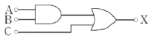
- X = (A + B) + C
- X = AB + C
- X = (A + B) · C
- X = A + B · C
(정답률: 67%)
10. 정류회로에서 여과장치가 하는 역할은?
- 레귤레이터
- 고주파 공진회로
- 맥동 감쇄장치
- ON-OFF 장치
(정답률: 54%)
11. 4개의 플립플롭으로 구성된 업 카운터의 모듈러스(modulu)와 이 카운터로 계수할 수 있는 최대계수는?
- 모듈러스 : 32, 최대계수 : 16
- 모듈러스 : 16, 최대계수 : 15
- 모듈러스 : 16, 최대계수 : 17
- 모듈러스 : 32, 최대계수 : 17
(정답률: 73%)
12. 다음 그림은 변조 회로도이다. A, B, C에 들어갈 파형의 종류를 옳게 나열한 것은?
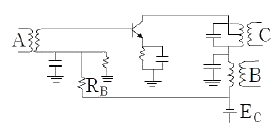
- A : 반송파, B : 피변조파, C : 신호파
- A : 신호파, B : 반송파, C : 피변조파
- A : 피변조파, B : 신호파, C : 반송파
- A : 신호파, B : 피변조파, C : 반송파
(정답률: 54%)
13. 발진회로의 위상 및 이득조건에 관한 설명으로 틀린 것은?
- 증폭회로의 입력과 되먹임회로의 위상 천이가 0도라면 출력은 동위상이다.
- 증폭회로의 입력과 되먹임회로의 위상관계는 발진주파수의 위상조건에 의해 조정된다.
- 증폭도를 A, 되먹임률을 β라 할 때, Aβ ＜ 1 이어야 한다.
- 발진이 안정되었을 때는 Aβ = 1에서 회로의 평형이 잡혀 있어야 한다.
(정답률: 59%)
14. 스위칭 소자가 갖추어야 할 조건으로 적합한 것은?
- 상승시간은 길고 하강시간이 짧아야 한다.
- 턴-오프 시간이 길어야 한다.
- 축적시간이 길어야 한다.
- 상승 및 하강속도가 빨라야 한다.
(정답률: 72%)
15. 다음 발진회로에 대한 설명 중 틀린 것은?
- 증폭된 출력의 일부를 입력측에서 귀환시켜서 출력측에서 연속적으로 파형을 발생시키는 것이다.
- 이 회로는 트랜지스터, FET, 저항, 콘덴서, 코일, 수정 등을 연결하여 구성한다.
- 지속적으로 원하는 신호를 발생시키는 회로이다.
- 원하는 신호를 전송하기 위하여 고주파에 저주파 신호를 포함시키는 회로이다.
(정답률: 52%)
16. 출력 전압이 60V인 증폭기가 3-j3√3 [V]를 귀환시켰을 때, 귀환량 β는 얼마인가?
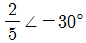
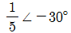
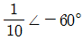
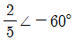
(정답률: 50%)
17. 다음 중 연산 증폭기에서 입력 부분의 주요 구성요소로 옳은 것은?
- 전류 증폭기
- 전력 증폭기
- 임피던스 증폭기
- 차동 증폭기
(정답률: 66%)
18. OQPSK 방식은 QPSK 방식에서 180도 위상 변화를 제거하기 위해 I-채널이나 Q-채널 중 어느 한 채널을 얼마만큼 지연시키는가? (단, TS는 심벌(symbol)의 증폭이다.)
- Ts
- 2Ts
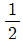
Ts- 3Ts
(정답률: 63%)
19. 베이스 변조회로의 특징 중 틀린 것은?
- 변조에 소비되는 전력이 적어도 된다.
- 일그러짐이 거의 없다.
- 낮은 전압으로 깊은 변조를 할 수 있다.
- 컬렉터 변조회로보다 변조 효율이 좋다.
(정답률: 50%)
20. 전자가 접합을 넘어 확산됨에 따라 pn 접합면에 전자와 정공이 존재하지 않는 공간을 무엇이라 하는가?
- 전도대
- 공핍층
- 바이어싱
- 도너
(정답률: 78%)
2과목: 회로이론 및 제어공학
21. 처음 10초간은 100A의 전류를 흘리고 다음 20초간은 20A의 전류를 흘리는 전류의 실효값은 몇 A 인가?
- 50
- 55
- 60
- 65
(정답률: 30%)
22. 다음과 같이 Y결선을 Δ결선으로 변환할 경우 R1의 임피던스는 몇 Ω 인가?
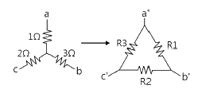
- 0.33
- 3.67
- 5.5
- 11
(정답률: 43%)
23. 다음 회로는 스위치 K가 열린 상태에서 정상상태에 있었다. t=0에서 스위치를 갑자기 닫았을 때 V(0+) 및 i(0+)는?
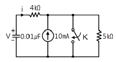
- 0V, 12.5 mA
- 50V, 0 mA
- 50V, 12.5 mA
- 50V, -12.5 mA
(정답률: 47%)
24. 그림에서 2Ω에 흐르는 전류 i는 몇 A 인가?
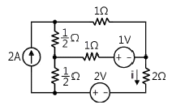
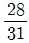
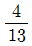
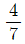
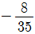
(정답률: 34%)
25. R = 4Ω, ωL = 3Ω의 직렬 RL회로에서 v(t) = 100√2sinωt + 50√2sin3ωt(V)의 전압을 인가할 때 저항에서 소비되는 전력(W)은?
- 1600
- 1703
- 2000
- 2128.75
(정답률: 45%)
26. 3상 부하가 Δ결선 되었을 때 a상에는 콘덕턴스 0.3℧, b상에는 콘덕턴스 0.3℧, c상은 유도 서셉턴스 0.3℧가 연결되어 있다. 이 부하의 영상 어드미턴스(℧)는?
- 0.2 – j0.1
- 0.3 + j0.3
- 0.6 – j0.3
- 0.6 + j0.3
(정답률: 33%)
27. 불평형 3상 회로에서 전압의 대칭분을 각각 V0, V1, V2, 전류의 대칭분을 각각 I0, I1, I2 라 할 때 대칭분으로 표시되는 복소전력은?
- V0I*1 + V1I*2 + V2I*0
- V0I*0 + V1I*1 + V2I*2
- 3V0I*1 + 3V1I*2 + 3V2I*0
- 3V0I*0 + 3V1I*1 + 3V2I*2
(정답률: 39%)
28. 2단자 임피던스의 허수부가 어떤 주파수에 관해서도 언제나 0이 되고 실수부도 주파수에 무관하게 항상 일정하게 되는 회로는?
- 정저항 회로
- 정인덕턴스 회로
- 정임피던스 회로
- 정리액턴스 회로
(정답률: 54%)
29. 60Hz, 120V 정격인 단상 유도전동기의 출력은 3HP이고 효율은 90%이며 역률은 80%이다. 역률을 100%로 개선하기 위한 병렬 콘덴서가 흡수하는 복소전력은 몇 VA 인가?(단, 1 HP = 746W 이다.)
- -j1865
- -j2252
- -j2667
- -j3156
(정답률: 25%)
30.
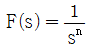
의 역 라플라스 변환은?- tn
- tn-1
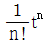
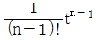
(정답률: 33%)
31. 다음과 같은 차분 방정식으로 표시되는 불연속계가 있다. 이 계의 전달함수는?
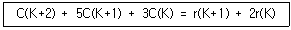
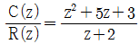
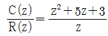
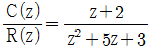
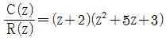
(정답률: 52%)
32.
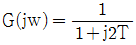
이고 T=2초일 때 크기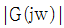
와 위상 ∠G(jw)는 각각 얼마인가?- 0.24, 76°
- 0.44, 36°
- 0.24, -76°
- 0.44, -36°
(정답률: 31%)
33. 근궤적에 관한 설명으로 틀린 것은?
- 근궤적은 허수축에 대칭이다.
- 근궤적은 K=0일 때 극에서 출발하고 K=∞일 때 영점에 도착한다.
- 실수축 위의 극과 영점을 더한 수가 홀수개가 되는 극 또는 영점에서 왼쪽의 실수축에 근궤적이 존재한다.
- 극의 수가 영점보다 많을 경우, K가 무한에 접근하면 근궤적은 점근선을 따라 무한원점으로 간다.
(정답률: 58%)
34. 물체의 위치, 방위, 각도 등의 기계적 변위량으로 임의의 목표 값에 추종하는 제어장치는?
- 자동조정
- 서보기구
- 프로그램제어
- 프로세스제어
(정답률: 50%)
35.
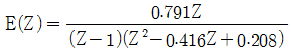
일 때 e*(t)의 최종값은?- 0
- 1
- 25
- ∞
(정답률: 40%)
36. 두 개의 그림이 등가인 경우 A 는?
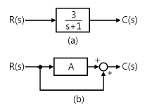
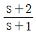
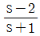
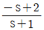
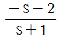
(정답률: 26%)
37.
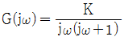
의 나이퀴스트 선도를 도시한 것은? (단, K ＞ 0 이다.)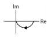
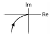
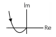
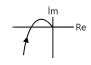
(정답률: 42%)
38.
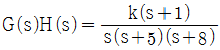
일 때 근궤적에서 점근선의 실수축과의 교차점은?- -6
- -5
- -4
- -1
(정답률: 46%)
39. 논리식
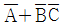
와 같은 논리식은?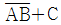
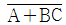
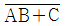
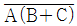
(정답률: 60%)
40. 그림과 같은 피드백제어의 전달함수를 구하면?
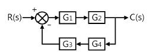
(정답률: 60%)
3과목: 신호기기
41. 60Hz인 3상 8극 및 2극의 유도전동기를 차동종속으로 접속하여 운전할 때의 무부하 속도(rpm)는?
- 720
- 900
- 1200
- 3600
(정답률: 60%)
42. 3상 전원으로부터 2상 전원을 얻고자 할 때 사용되는 변압기의 결선방식이 아닌 것은?
- 포크(fork) 결선
- 스콧(scott) 결선
- 메이어(meyer) 결선
- 우드브리지(wood brige) 결선
(정답률: 54%)
43. 직류 직권전동기의 토크 특성 곡선은?
(정답률: 54%)
44. 사이클로 컨버터란?
- 직류 제어 소자이다.
- 전류 제어 소자이다.
- 실리콘 양방향성 소자이다.
- 제어 정류기를 사용한 주파수 변환기이다.
(정답률: 50%)
45. 철도분야 종합 관제실에 설치되는 열차종합제어장치(TTC)의 구성이 아닌 것은?
- 표시반
- 연동장치
- 제어용 콘솔
- 데이터 전송장치
(정답률: 61%)
46. 건널목 제어기의 종점제어자용 2440형의 제어회로 구성방식과 발진주파수로 옳은 것은?
- 개전로식 : 20 kHz ± 2 kHz
- 폐전로식 : 20 kHz ± 2 kHz
- 개전로식 : 40 kHz ± 2 kHz
- 폐전로식 : 40 kHz ± 2 kHz
(정답률: 64%)
47. 자극수 4, 슬롯 수 40, 슬롯 내부 코일변수 4인 단중 중권 정류자편 수는?
- 10
- 20
- 40
- 80
(정답률: 40%)
48. 철도 건널목 전동차단기에서 회로제어기의 특징 중 옳은 것은? (단, 접점 수 = N, 접점용량 = Pm, 접점압력 = PT)
- N = 5접점, Pm = DC24 V-0.4A, PT = 60-100 g
- N = 6접점, Pm = DC24 V-0.4A, PT = 60-100 g
- N = 4접점, Pm = DC60 V-0.9A, PT = 60-100 g
- N = 6접점, Pm = DC60 V-0.9A, PT = 50-120 g
(정답률: 58%)
49. 부흐홀츠(Buchholz) 계전기로 보호되는 기기는?
- 변압기
- 발전기
- 동기전동기
- 회전변류기
(정답률: 63%)
50. 임펄스형 궤도회로에서 사용하는 펄스의 주기는 몇 Hz 인가?
- 3
- 10
- 20
- 60
(정답률: 54%)
51. 궤도회로의 단락감도를 높이기 위하여 사용되는 계전기에 대한 설명 중 틀린 것은?
- 한류장치의 임피던스는 높을 것
- 계전기 코일의 임피던스는 높을 것
- 동작전압과 낙하전압의 차가 클 것
- 계전기 동작전압은 최소한일 것
(정답률: 43%)
52. 계전기 접점의 기호 결선도이다. 유극 또는 3위 계전기 접점이 아닌 것은?
(정답률: 54%)
53. 정격전압 24V, 저항 192Ω 계전기의 낙하전류는 몇 mA 이상인가?
- 37.5
- 87.5
- 112.5
- 125
(정답률: 47%)
54. 단상 유도전동기의 기동방법 중 브러시가 필요한 구조인 것은?
- 반발 기동형
- 분상 기동형
- 셰이딩 코일형
- 콘덴서 기동형
(정답률: 58%)
55. AC NS형 전기 선로전환기의 정격전압에서 최대 전환력은 얼마 이상인가?
- 90 kg
- 100 kg
- 200 kg
- 300 kg
(정답률: 41%)
56. 철도 건널목 보안설비의 종류에 따른 설비구성이 아닌 것은?
- 경광등
- 조명장치
- 전동차단기
- 유도신호기
(정답률: 53%)
57. 전력소비가 적고 철손과 동손만을 공급하여 변압기 온도 상승 시험을 하는 방법은?
- 반환부하법
- 전부하시험
- 무부하시험
- 충격전압시험
(정답률: 50%)
58. CTC의 주파수분할 다중화방식의 특징 중 틀린 것은?
- 비동기식만 가능하다.
- 간섭파의 영향에 강하다.
- 별도의 모뎀이 필요 없다.
- 한 전송로를 일정한 시간 폭으로 나누어 사용한다.
(정답률: 55%)
59. 유도기에서 저항속도제어법과 관계가 없는 것은?
- 비례추이
- 농형 유도전동기
- 속도 조정범위가 적다.
- 속도제어가 간단하고 원활하다.
(정답률: 59%)
60. 3상 변압기 2대를 병렬 운전하고자 할 때, 병렬 운전이 불가능한 결선 방식은?
- Δ-Y 와 Y-Δ
- Δ-Y 와 Y-Y
- Δ-Y 와 Δ-Y
- Δ-Δ 와 Y-Y
(정답률: 64%)
4과목: 신호공학
61. 고속철도 UM71 궤도회로장치의 현장 선로 간에 일정간격으로 설치된 보상용 콘덴서가 하는 역할은?
- 송전 및 착전 전압값을 다르게 한다.
- 궤도송신기와 수신기 사이의 임피던스를 증가시킨다.
- 선로의 인덕턴스를 보상하여 전송을 개선한다.
- 고조파 성분을 제한한다.
(정답률: 58%)
62. 행선지가 분기되는 역에서 열차의 행선지에 따라 정당한 방향으로 진로를 현시할 수 있도록 열차번호와 행선지를 운전취급자에게 알려주는 설비는?
- 열차자동방호장치
- 신호정보분석장치
- 선로전환기
- 열차번호인식기
(정답률: 66%)
63. 궤도회로를 구성함에 있어 부득이 사구간이 발생되었을 때, 사구간의 길이가 1210[mm] 이상의 경우 사구간 상호간 또는 다른 궤도회로와 몇 [m] 이상 이격하여야 하는가?
- 5
- 7
- 10
- 15
(정답률: 38%)
64. 장내신호기 접근쇄정의 해정시분은?
- 20초±10%
- 60초±10%
- 90초±10%
- 120초±10%
(정답률: 64%)
65. 복선구간에 사용하는 대용폐색 방식은?
- 연동폐색식
- 자동폐색식
- 지도식
- 통신식
(정답률: 62%)
66. 복궤조 궤도회로의 각 레일에 흐르는 전류를 측정한 결과 525[A] 와 475[A] 로 불평형 상태였다. 이 궤도회로의 불평형률은?
- 3[%]
- 5[%]
- 7[%]
- 10[%]
(정답률: 55%)
67. AF 궤도회로(T121형 제외)에서 궤도회로 단락감도는 맑은날 몇 [Ω] 이상 확보하여야 하는가?
- 0.01
- 0.03
- 0.04
- 0.06
(정답률: 47%)
68. 다음 도식기호의 명칭은?
- 원방 신호기
- 입환 신호기
- 폐색 신호기
- 중계 신호기
(정답률: 46%)
69. 3현시 구간에서 폐색구간의 거리가 1200[m], 열차의 길이가 100[m], 신호 현시 확인에 필요한 최소거리가 200[m], 신호기가 주의신호에서 진행신호를 현시할 때 까지의 시간이 1초라면 최소운전시격은 몇 초인가? (단, 열차의 속도는 90[km/h] 이다.)
- 100
- 109
- 113
- 119
(정답률: 58%)
70. 열차 최고속도가 150[km/h]로 운행하는 선구에 건널목 경보시간을 30초로 할 때 적정한 경보제어 거리는?
- 850 [m]
- 1000 [m]
- 1250 [m]
- 1450 [m]
(정답률: 59%)
71. 전기 선로전환기 내부에 설치된 회로제어기의 역할은?
- 전동기의 전원을 차단하여 표시회로 구성
- 전동기의 회전력을 감소시키거나 전달
- 전동기의 회전 시 충격 방지
- 전동기 회전방향 변경
(정답률: 50%)
72. 경부고속철도 구간에서 터널경보장치의 터널 내 경보등의 가시거리는?
- 200[m] 이상
- 250[m] 이상
- 300[m] 이상
- 350[m] 이상
(정답률: 42%)
73. 유럽 각국의 열차제어시스템을 상호 호환이 가능하도록 표준화한 차상신호시스템은?
- LZB
- ZUB Series
- KVB
- ERTMS/ETCS
(정답률: 65%)
74. 분기각이 적고 리드 곡선반경이 크며 포인트에서 크로싱 후단까지 일정한 곡률을 유지하는 분기기는?
- 시셔스 분기기
- 승월 분기기
- 노스가동 분기기
- 편개 분기기
(정답률: 63%)
75. 일반철도 단선구간의 역간 열차평균운전 시분이 5분이고 폐색취급 시분이 3분일 경우 이 구간의 선로용량은? (단, 선로 이용률은 0.8 이다.)
- 124
- 128
- 136
- 144
(정답률: 57%)
76. 장내신호기의 위치는 진입선 최외방 선로전환기가 열차에 대하여 대향이 되는 경우 그 첨단 레일의 선단에서 몇 [m] 이상의 거리를 확보하여야 하는가? (단, 상시 쇄정된 선로전환기는 제외)
- 100
- 130
- 150
- 200
(정답률: 42%)
77. 철도신호제어설비의 안전측 동작원칙에 대한 설명으로 틀린 것은?
- 계전기 회로는 여자시 기기를 쇄정하는 방식
- 궤도회로는 폐전로식
- 전원과 계전기의 위치를 양단으로 하는 방식
- 계전기는 양선(+, -) 모두를 제어하는 방식
(정답률: 47%)
78. 전차선 절연구간 예고지상장치에 대한 설명으로 틀린 것은?
- 송신기와 지상자의 간격은 70[m] 이내로 설치한다.
- 고장표시반은 송신기 1, 2계의 운용, 동작상태 및 고장감시 기능을 가져야 한다.
- 지상자 설치위치는 ATS지상자 설치와 동일하게 한다.
- 지상자는 속도조사식에 의하되 송신기의 출력주파수를 차상장치로 전송하여야 한다.
(정답률: 59%)
79. 열차집중제어장치의 주요기능으로 거리가 먼 것은?
- 열차운행계획관리
- 수송수요예측관리
- 열차의 진로 자동제어
- 신호설비의 감시제어
(정답률: 57%)
80. 궤도계전기 성능에 대한 요건으로 틀린 것은?
- 다른 전기회로에 영향을 미치지 않아야 한다.
- 제어구간의 길이가 길고 소비전력이 적어야 한다.
- 연동회로 구성을 위해 접점수가 많아야 한다.
- 여자전류가 다소 변동하여도 확실히 여자 되어야 한다.
(정답률: 67%)